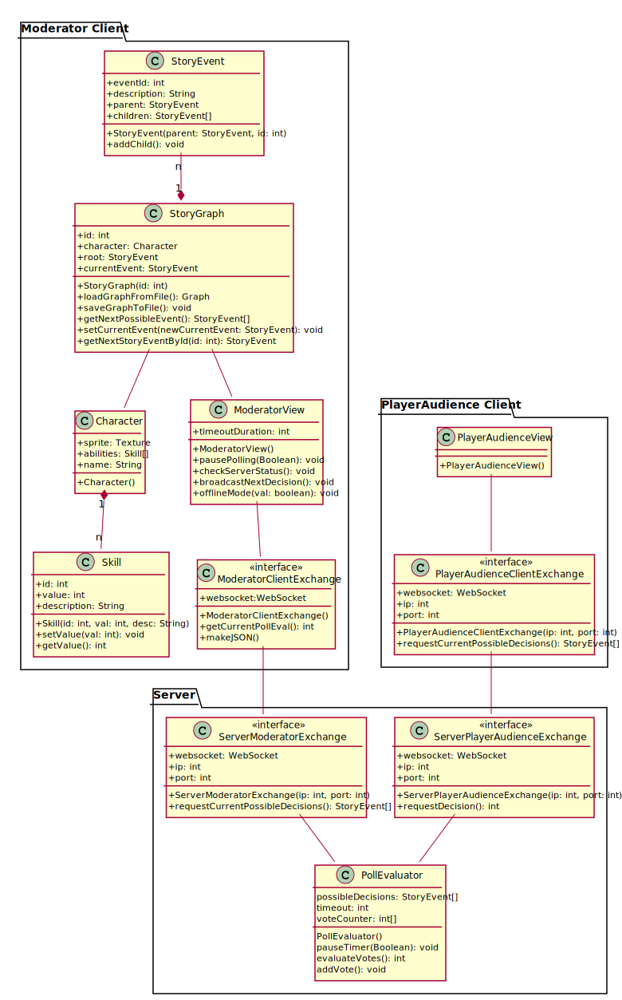
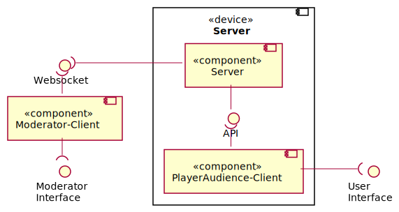
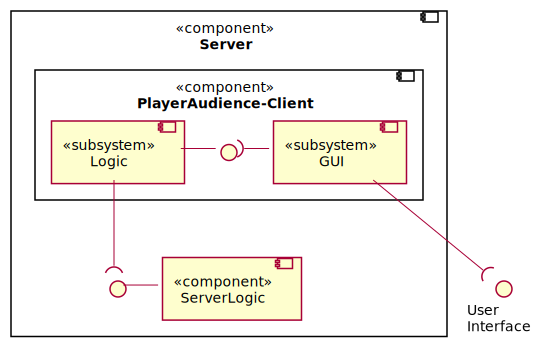
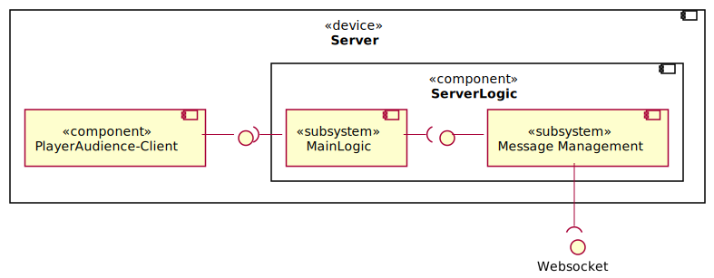
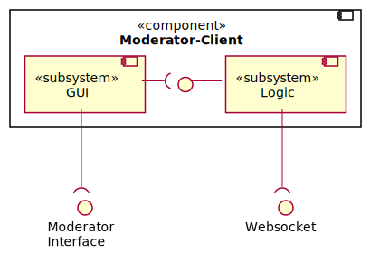

Architecture diagrams
The diagrams below show the architectural structure of the different components of QualityQuest and how they communicate via well-defined interfaces. Since the architecture is currently still in the concept phase, future changes are very likely.
Class diagram
The class diagram shows the architectural structure of the individual components of QualityQuest and thus which classes are used in the implementation to logically implement the project. It also shows which interfaces the individual components use to communicate with each other.
Since the StoryGraph is run and build locally on the Moderator-Client and the server only has a forwarding and poll evaluation function (possible decisions get forwarded to the audience, polls get evaluated, result of the vote gets forwarded to the Moderator-Client), a fallback is easily possible with only the Moderator as decisionmaker. So if the server is no longer accessible for the Moderator-Client, this will be noticed by the regular status requests and the Moderator will be informed together with the option to switch to Offline-Mode. Since the server only informs the Moderator-Client about the results of the voting, in case of a server failure, only the information about the voting conditions is lost for the Moderator-Client, because the actual decisions are made locally.
In Offline-Mode, the timer is deactivated and the Moderator can select decisions directly, while status checks are still performed in the background to inform the Moderator in case the server becomes available again.

Component diagrams
The class diagrams show the architectural structure of the individual components using interfaces/ports and subsystems. Since the architecture is currently still in the concept phase, future changes are very likely.
Component-Overview
An overview of all components of QualityQuest and which interfaces exist between the individual components, or the user interfaces of the participants. The physical device Server contains the actual Server component as backend, while the PlayerAudience-Client component corresponds to the frontend. Since there are several instances of the PlayerAudience-Client, the communication between front- and backend is done via an API, which uses the observer-pattern. The exchange between Server and Moderator-Client is realized via a Websocket connection.

PlayerAudience-Client
The PlayerAudience-Client component consists of a subsystem GUI, which will allow the user to interact via the user interface using HTML and Javascript, and the subsystem Logic, which is responsible for the interpretation of input and the exchange via the API.

Server
The Server component consists of a subsystem for the Poll Evaluation, which interprets the determined results, and a Logic component. These in turn contain a subsystem Networking, which is responsible for the entire handling of communication via the interfaces Websocket and API. Connected to this is the subsystem Message Management, which prepares the received data for the Poll Evaluation and puts the results into a suitable format for sending.

Moderator-Client
The component Moderator-Client consists of a subsystem GUI, which, based on Unity, provides a moderator interface for interaction and presentation of the game. The subsystem Logic manages the progress in the game tree, the influence of stats on decisions as well as the communication to the component Server via the Websocket.
